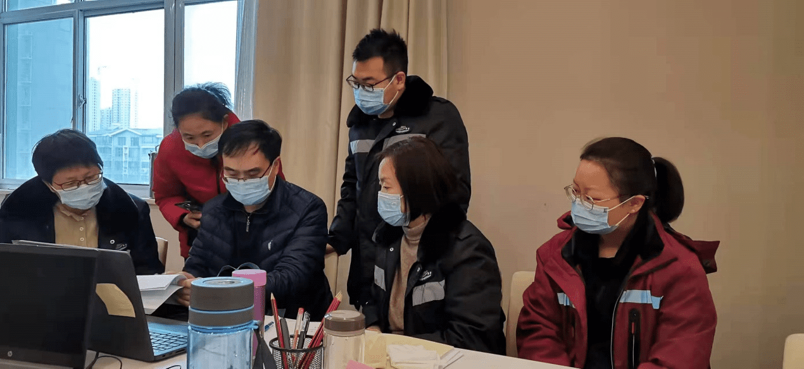

郑大故事：有一种爱，叫与你并肩作战——记公共卫生学院“80后”抗疫夫妻
日期: 2022年02月28日 信息来源: 党委宣传部 公共卫生学院
2022年伊始，新冠肺炎疫情再次袭来，广大医务人员奋不顾身、冲锋在前。他们中有的是夫妻、有的是父子，他们也是并肩作战的“战友”。
毕业于郑州大学公共卫生学院的陈帅印和李君夫妻俩就是奋战在抗疫一线的“大白”家庭。陈帅印本硕博皆就读于郑州大学，2014年博士毕业后留校任教；李君本科和硕士也就读于郑州大学，2011年硕士毕业后成为一名医务工作者。不同的岗位，同样的坚守，作为普通高校教师和医务工作者，他们在接到抗击疫情的任务后，舍小家、顾大家，并肩逆行、奔赴不同的现场，紧张开展流调溯源、模型预测、风险研判等具体工作，在各自岗位上诠释着担当与奉献。
闻令而动，逆行而上
李君是河南省疾病预防控制中心的一名防疫工作者，自2020年新冠疫情暴发后，就一直战斗在疫情防控一线。2022年1月3日上午，李君紧急接到通知，郑州市某医院发现1例初筛阳性。她与同事们闻令而动，听令而行，第一时间赶往现场开展流调溯源工作，与当地一起对指示病例开展详细的流调溯源、风险点梳理、涉疫场所管控、密接人员排查、调查报告撰写等工作。这一天的工作从上午10点开始到凌晨两点结束，回到家时老人、孩子都已经睡着了，而老公陈帅印还在等待，作为一名流行病学工作者，陈帅印能理解和想象，这一天爱人心里的压力和担忧。但他还是早早就为李君收拾好出差行李，多次疫情，多次驰援，陈帅印知道只要有疫情，李君就做好随时出差的准备，他也会在第一时间为她准备好行李。看到爱人满身疲惫深夜而归，他很心疼，但作为郑州大学公共卫生学院流行病学教研室的一名教师，他也明白这是她的本职工作，要给她最有力的支持，做她最坚强的后盾。只有调查流行病学准确溯源，才能为尽快遏制疫情锁定可能的方向。
第二天一大早，李君再次出发。这一次，李君是赶往郑州市二七区疾病预防控制中心，开展此次疫情的流行病学调查、溯源和风险研判、模型预测等工作，这一去就是半个月，在这半个月里她数不清给多少确诊病例和密接打过电话。李君还加了很多人的微信，为他们解决疑难问题。李君深刻地记得，一位老太太有些不太理解流调工作而拒绝配合，李君就设身处地与真诚沟通，关心其家人、身体、生活等，倾听对方诉说，不着急询问工作中需要的专业问题，临走时跟她说：“想起来啥随时跟我说。”第二天，老太太哭泣跟李君打电话，家里有人确诊，并说了很多重要信息。她坚信只有用心交流，用爱感同身受，才能在海量的信息中找到关键点和风险点，才能精准地锁定传播链，进而确定风险人群。
一线奋战 并肩战斗
在本轮郑州疫情的关键阶段，郑州大学公共卫生学院分别组建三支由93名博士和硕士研究生，4位专任老师带队组成的流调队，按照郑州市疫情防控指挥部的统一部署，分别奔赴郑州市高新区、中原区、经开区，支援疫情防控工作。
2022年1月14日，作为流行病学专业博士、流行病学专业的一名教师，陈帅印主动申请参与防控工作，带领17名由研究生和博士生组成的队伍，赶赴郑州市中原区开展疫情防控工作。他带领学生参与整理流行病学调查报告并一一审核，梳理风险点，为尽早实现圈住、封死、扑灭、捞净的工作目标出谋划策。工作第一天，他忙到了凌晨一点。工作繁重，时常要忙到半夜，陈帅印不辞劳苦全身心投入。
在现场工作中，陈帅印以现场为课堂，以帮带教，结合工作实际，现场开展流行病学教学工作。他带领的17个研究生，基本上包含各个科室，他们不计报酬，踊跃报名，在工作中认真学习，任劳任怨。截至1月17日20时，郑州大学公共卫生学院疫情防控志愿者师生共修订并梳理29份确诊病例流调报告，制作病例传播链示意图7份，撰写并审核500余份密接者流调报告，累计拨打电话500余人次，采样样本2500余个，消杀涉疫场所60余处。
陈帅印还邀请爱人李君结合丰富的现场工作经验，在线为师生志愿者进行流调溯源、风险人群排查、信息汇总等开展培训和答疑。陈帅印说，他们学着相近的专业，有着共同的理想，他致力于科学研究，她奔赴在现场前线，他们对彼此的工作无比支持。
做女儿心中的“榜样”
陈帅印在离家之前，7岁的女儿对爸爸说：“家里两个三十多岁的人都去打病毒了，就剩下我和两个六十多岁的老人了……” 有一天晚上李君给女儿的打电话，女儿说：“爸爸去帮妈妈打病毒了，有爸爸加入爸爸妈妈很快就能回来了，因为我爸是博士”。
2020年支援北京新发地疫情时，李君工作间隙与女儿视频，女儿说“为什么别的小朋友都有妈妈陪着，而我的妈妈要出差，这不公平”。李君说，她能想象她没有妈妈陪伴的那种孤单失落与难过，也能相信她在跟小朋友说妈妈去“打”病毒的时候内心一定是自豪的。
这两年疫情多发，李君时常支援前线，不在家的日子里，会让朋友帮忙接送女儿上学。一次女儿问李君朋友：“世界上有没有英雄？”李君朋友说：“有啊。那些穿着白衣服红衣服救人的人就是啊。”李君女儿说：“那我爸爸妈妈就是英雄！”
“没有从天而降的英雄，只有挺身而出的凡人。”陈帅印和李君留下年幼的孩子、年迈的父母，一起奋斗在抗击疫情的战场，忘我工作，无私奉献，把个人的小我融入防疫的大我，听从指挥，冲锋在前，做防疫屏障的维护者，做群众健康的守护者，用行动诠释着爱情最美的样子。
有一种浪漫叫“抗疫夫妻”，有一种力量叫“并肩作战”。平日里，陈帅印和李君相互扶持，守护自己的小家，在疫情面前，他们并肩作战，共同守护“大家”，用爱筑牢防控阵地。作为青年一代，作为抗疫新冠肺炎的亲历者与参与者，陈帅印和李君做伟大抗疫精神的学习者、传播者、践行者，积极投身疫情防控斗争中去，不畏艰险、真情奉献，展现郑大人的责任与担当，而夫妻俩一再表示：“我们做的都是本职工作，只是成千上万疫情防控工作人员中一份子。”
作者：任然 曾鑫 撰稿